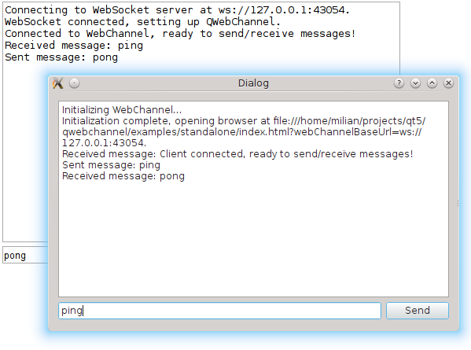

Qt WebChannel Standalone Example
A simple chat between a server and a remote client running in a browser.

Standalone demonstrates how to use the QWebChannel C++ API to communicate with an external client. It is a simple chat between a C++ application and a remote HTML client running in your default browser.
Running the Example
To run the example from Qt Creator, open the Welcome mode and select the example from Examples. For more information, visit Building and Running an Example.
Communicating with a Remote Client
The C++ application sets up a QWebChannel instance and publishes a Core object over it. For the remote client side, index.html is opened. Both show a dialog with the list of received messages and an input box to send messages to the other end.
The Core emits the Core::sendText() signal when the user sends a message. The signal automatically gets propagated to the HTML client. When the user enters a message on the HTML side, Core::receiveText() is called.
All communication between the HTML client and the C++ server is done over a WebSocket. The C++ side instantiates a QWebSocketServer and wraps incoming QWebSocket connections in QWebChannelAbstractTransport objects. These objects are then connected to the QWebChannel instance.
See also Qt WebChannel JavaScript API.